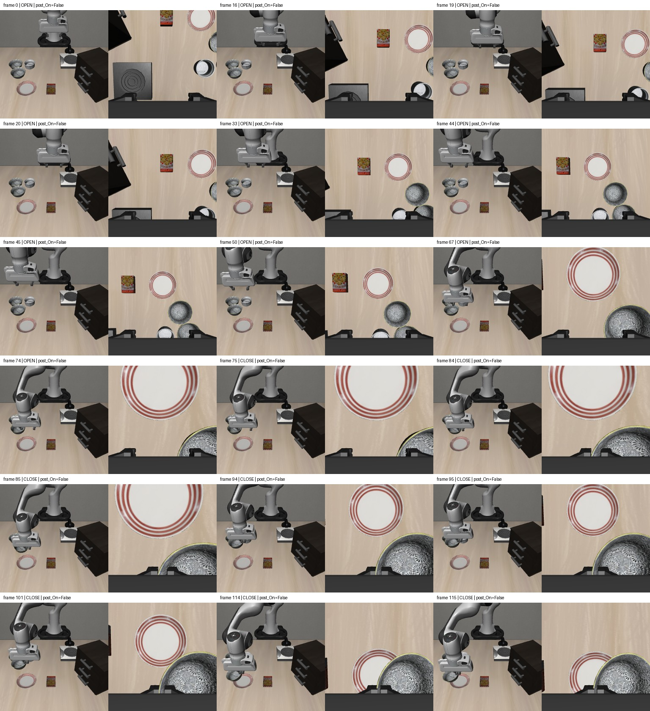
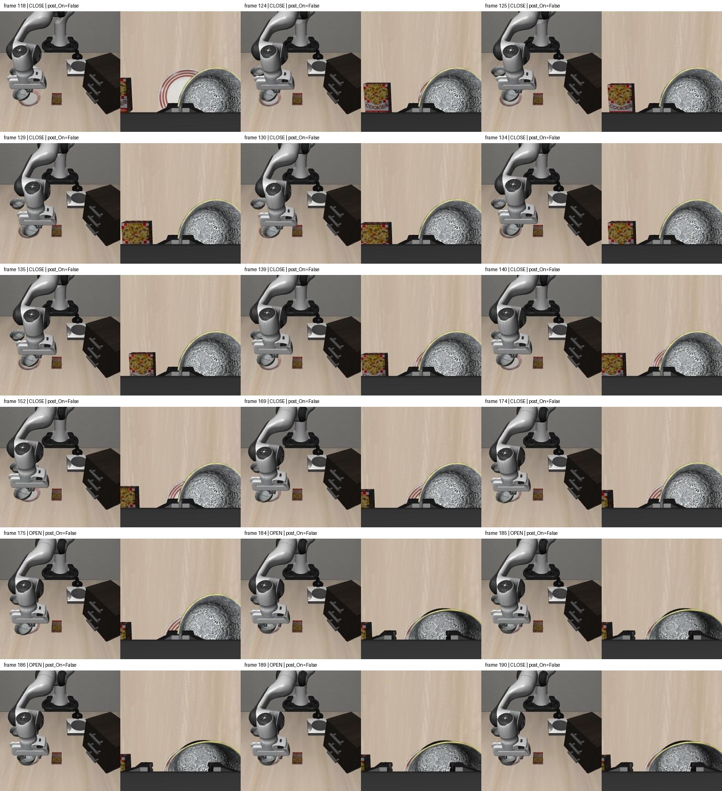
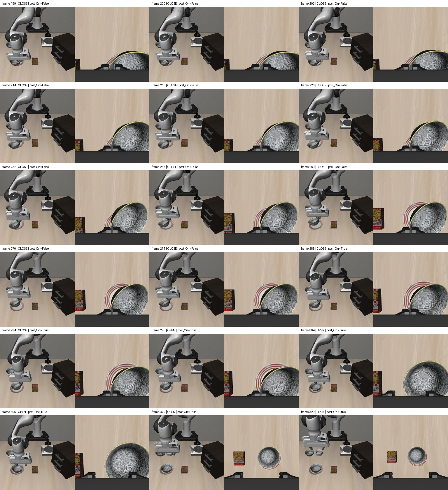
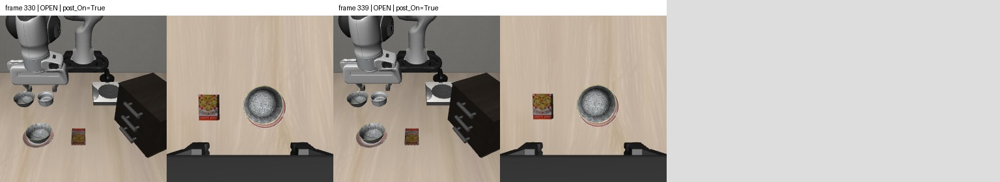

X偏移−7.64厘米，Y偏移−3.30厘米。最后10步检查全通过。中途有松爪再夹取的放置调整，保留为纠正候选，尚未裁剪或自动选入训练。
第216–270个控制动作连续55步为精细横向移动0.1，应单独审查，不能把整条当作快速普通搬运示范。原件不改，不直接放大动作标签或加速视频冒充新示范。
这是人工示范回放，不是模型评测。20FPS对应物理20Hz，操作等待省略；每帧为动作执行前双视角RGB，post_On为动作后标签。查看56个关键帧，没有物理重放或额外稳定性试验。



